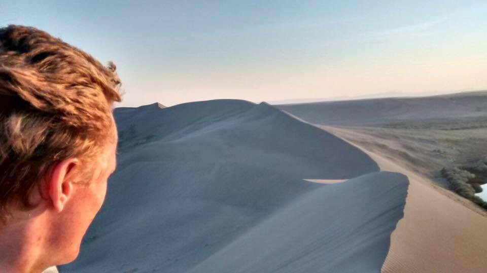

About Me
Education: I will graduate in May 2020 with a Bachelor's of Science in Physics (Astrophysics emphasis) with minors in Music and Applied Mathematics!
Research Interests: I'm broadly fascinated by computational astrophysics, both in the modelling of complex systems and the analysis of vast amounts of data. I'm particularly interested in high energy astrophysics and the time evolution of universal systems, and my current research project combines all of these passions as we search for accreting x-ray binaries.
What I do for fun: I enjoy being outdoors, playing complicated board games, drinking wine, trying and learning new things, playing the piano, and - most importantly - spending time with the people I love. I like to tinker with sciencey things, and over the years I've built homemade fireworks and rockets, made rudimentary metal sculptures in a homemade kiln, and created a fun Twitter bot!